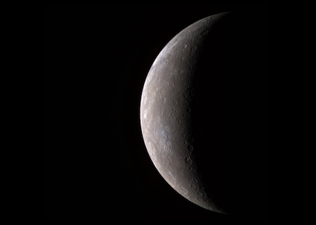

Mercury is the smallest planet in our solar system. It’s just a little bigger than Earth’s moon. It is the closest planet to the sun, but it’s actually not the hottest. Venus is hotter.
All 3D models in the page have loaded
Explore Mercury! Click and drag to rotate the planet. Scroll or pinch to zoom in and out. Credit: NASA Visualization Technology Applications and Development (VTAD)
Along with Venus, Earth, and Mars, Mercury is one of the rocky planets. It has a solid surface that is covered with craters. It has no atmosphere, and it doesn’t have any moons. Mercury likes to keep things simple.
This small planet spins around slowly compared to Earth, so one day lasts a long time. Mercury takes 59 Earth days to make one full rotation. A year on Mercury goes by fast. Because it’s the closest planet to the sun, it doesn’t take very long to go all the way around. It completes one revolution around the sun in just 88 Earth days. If you lived on Mercury, you’d have a birthday every three months!
A day on Mercury is not like a day here on Earth. For us, the sun rises and sets each and every day. Because Mercury has a slow spin and short year, it takes a long time for the sun to rise and set there. Mercury only has one sunrise every 180 Earth days! Isn't that weird?

Here you can see that Mercury is a light grey color.

This is Mercury's northern horizon as seen by the MESSENGER spacecraft during its third flyby.

The big, star-shaped crater towards the bottom of the globe is named Debussy.

This picture of Mercury has colors added so you can better see the surface differences and craters.